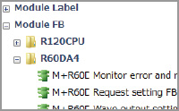

Controllers MELSEC iQ-R Series Product features -Solution-

Reduce engineering time
Quick device selection
With FA Integrated Selection Tool, it is possible to check product combinations without referring to manuals. A “selection result” that is convenient when requesting a purchase quote can also be created. The tool is available on the browser from the Mitsubishi Electric FA Global website.
Point1Significantly reduce the time for selecting devices and combinations
- Combinations of modules and options selected can be simulated. Restrictions such as consumption current and number of installable modules can also be checked
- Selected product name, model, and quantity are exported in Excel® format. The list can be printed out for consideration of the purchase
- The selected result can be exported in AutomationML format and imported to the engineering software MELSOFT Navigator
- Can quickly move to the design phase based on the imported selection results
Simple point and click programming architecture
GX Works3 is the programming and maintenance software specifically designed for the MELSEC iQ-R Series.
With its various functions and intuitive operability, engineering time can be reduced
One software covers the product development cycle, from the design stage all the way to maintenance of the control system.
System design
- Easy system configuration with parts library
- Easy work sharing with structured programs
- Integrated motion modules setup
Programming
- Complies with IEC 61131-3 and supports 5 main programming languages
- Easy creation of function blocks
Commissioning
- Simulation without a device required
- Quick search
- Data flow analysis
- Scan time clear function
 Maintenance
Maintenance
- Module and network diagnostics
- Multi-language commenting
Point2Setup can be done by simply arranging modules
- GX Works3 incorporates features that enable module configuration and I/O assignment parameter registration by simply dragging and dropping components
- Simply double-click on the desired module, the corresponding parameters will be registered in the project
- System design is easily completed in one screen, reducing engineering time
Point3Utilization of programs and collaboration on system design
- Structured projects and structure management enable utilization of programs and collaboration on system design
- Since program changes made by others are quickly reflected and revision histories are centrally managed, tracking changes is easy

Point4Motion related module setup with GX Works3 only
- GX Works3 is equipped with a special motion setup tool that makes it easy to change motion module and simple motion module settings such as module parameters, positioning data and servo parameters
Point5The use of MATLAB® and Simulink® eliminates the need for programming, reducing equipment commissioning costs NEW
- Automatic code generation from model-based development allows complex algorithms to operate without manual coding
- Validation using the simulation capabilities of MATLAB® and Simulink® reduces commissioning time and costs

Point6Efficient programming utilizing similar ladder circuits
- Increment device numbers to paste continuously
- If one standard circuit is created, it will be duplicated in a batch using a continuous pasting function
Point7Utilization of segmented programs
- By segmenting a control program into components (function blocks), intuitive and highly diverting programming (structured programming) is possible
- When segmented program components are registered as library, utilization of segmented programs is easier, thereby reducing programming time
Program components (FB/FUN) are available. For details on how to obtain program components, please contact your local Mitsubishi Electric sales office or representative.
■ Third-party partner FBs
■ Module FBs
(for Mitsubishi Electric products)

Point8Function blocks (FBs) can be created from existing device programs
- Repeatedly used ladder circuits in the existing programs are segmented into components (function blocks) for utilization
- Programs can be shortened by representing lengthy processing in ladder circuits as functions
Point9Sample programs enable test operation of a device and demonstration machine
- Using e-Manual Viewer*1, it is possible to directly copy sample programs within manuals and paste them to GX Works3
- Execution of copied sample programs enables test operation of a device and demonstration machine
- *1.The e-Manual Viewer is a next-generation digital manual that consolidates factory automation products manuals into an easy-to-use package with various useful features integrated into the viewer.
Point10Utilization of the MELSEC-Q Series programs reduces programming time
- MELSEC-Q Series programs can be utilized, eliminating the need to create a new program*2
- The MELSEC-Q Series programs created with GX Works2 can be converted to the MELSEC iQ-R Series programs by simply opening them in GX Works3
- *2.MELSEC-A Series programs can also be converted to the MELSEC iQ-R Series programs. Lineup of useful tools for conversion is available.
Point11Simulate the operations of the entire line or equipment without physical devices NEW
- By linking the 3D simulator MELSOFT Gemini and the logic simulator MELSOFT Mirror, the execution results of control programs can be visualized in 3D, enabling the simulation of entire line or equipment operations without physical devices


MELSOFT Gemini
A simulator that enables 3D validation of lines and equipment in a digital space. Machine interference and cycle time can be verified based on control programs.

MELSOFT Mirror
(Currently available in Japan)
A simulator that allows validation of control logic for lines and equipment in a digital space. Validation that takes into account multiple programmable controllers, networks, and mechanical responses helps develop high accuracy control programs efficiently.
Point12Simulate operation even before having devices
- Simulation is possible on GX Works3 without devices required
- Test before having devices reduces rework
- Motion control can be simulated as well
Point13Quick search enables execution of functions quickly
- Displays related functions from the entered key word
- Related functions can be searched easily, reducing time to search a manual
Point14Visualize device status and affected area of programs
- Data flow analysis visualizes the device status and affected area of programs
- When taking over and maintaining programs created by others, it is easy to understand the programs

Point15AI analysis simplifies cause analysis by inferring the relationship between input and output devices that changes with equipment operation NEW
- AI-powered data flow analysis of logging data from normal operation infers and displays physical relationships of input/output devices that change as equipment operates, even if they are unrelated in the program
- It helps to analyze the root cause of stoppages caused by the operation of the equipment that do not trigger errors
Point16Errors can be easily checked by module and network diagnostics
- Errors can be easily identified by using the diagnostic function
- Module configuration of the system and error status are easily recognized with system-wide monitoring
Point17Multi-language menu, ideal for global support
- GX Works3 supports multiple languages (Japanese, English, Chinese) for global use
- Device comments within the project can be switched between various languages
- When maintenance is performed by other language speakers, comments can be switched to their native language for smooth operation
Easy maintenance with data visualization
With GX LogViewer*3, collected data and real-time data can be visualized on a computer without an oscilloscope.
- *3.For details on how to obtain the software, please contact your local Mitsubishi Electric sales office or representative.
Point18Analysis by visualizing device/label
- Identify a fault by overlaying logging data during normal operation and abnormal operation
- Monitor logging data in real-time by connecting with a programmable controller in operation
Point19Easier error analysis through synchronized playback of related data
- Synchronized playback of data can be viewed only by loading recorded operation data to GX Works3 and thus executing the tools necessary for viewing
- Playback of program transition on GX Works3 can be synchronized with GX LogViewer and GOT offline monitor, simply by moving the slider on the seek bar back and forth and thus facilitating the efficiency of error analysis